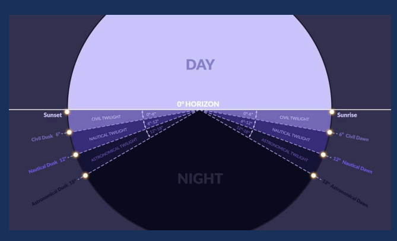
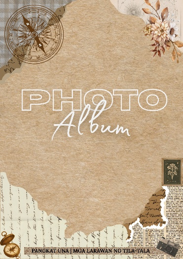

TILA-TALA
Mga istoryang nakahibla sa bawat daloy ng oras
Mga istoryang nakahibla sa bawat daloy ng oras
Tilaok ng Tala — Pinagsama ang dalawang magkaibang sandali ng oras. Ang tilaok, na karaniwang inuugnay sa umaga, ay sumisimbulo ng paggising, pagsisimula, panibagong paglalakbay. Samantala, ang tala, na mas nakikita sa gabi, ay kumakatawan sa gabay, pagninilay, at tahimik na pag-alala. Pinapakita ng Tila-Tala ang kabuuang siklo ng paglalakbay, mula sa paggising ng umaga hanggang sa katahimikan ng gabi, na sumasalamin sa pagtuklas sa kultura, kasaysayan, at karanasan ng Bulacan.

Ang bawat pahina ay nagiging bahagi ng isang siklo ng oras na sumasalamin sa pagtuklas, karanasan, at pagpapahalaga sa mga simbahan, pook pangkasaysayan, pasyalan, at lokal na pagkain ng lalawigan. Mula umaga hanggang gabi at pabalik sa bagong umaga.
Para sa mga pananampalatayang hinubog ng panahon
Sandalan ano man ang maging hamon
Bitbit ang mga salita ng Panginoon
Sabay-sabay tayong babangon
Susuungin ang bawat hamon
Lumipas man ang panahon
Mamayani ang salitang “Puhon”
At kailanman ay hindi susuko sa pagbangon
Para sa pagkakakilanlan na hinubog ng kasaysayan
Kung saan ang bawat pangyayari ay sadyang makabuluhan
Ang mga aral ng nakaraan ay patuloy na pinanghahawakan
Upang ang diwa ng pagmamahal sa bayan ay patuloy na mapagyaman
Sa ating pag-usad sa kasalukuyan
Bitbit ang mga aral mula sa nakaraan
Ito ang ating magiging sandigan
Upang pag-asa sa hinaharap ay ating makamtan
Para sa mga pagkaing hindi lamang laman ng sikmura
Kundi alaala ng bayan na sa bawat kagat ay sumisigla
Ang bawat lasa ay mayroong pamana
Nagsisilbing patunay na ang pagkain ay malaking bahagi ng ating kultura
Sa bawat halimuyak na dala ng bawat sangkap
Walang humpay ang saya ng bawat pamilya sa hapag
Bawat timpla ay simbolo ng sining at pangarap
Na sa bawat tikim, ay patuloy na dumadaloy at sumisiklab
Para sa kasalukyang hinubog ng nakaraan
Bawat pook ay may bitbit na kwento at kasaysayan ng bayan
Mga simbahan na saksi sa naging daloy ng panahon
Sa bawat paglalakbay, aral ng nakaraaan ay muling nahahagkan
Sa bawat tapak sa makasaysayang kalsada
Kwento ng bayan ay natutunghayan ng madla
Mga pook ay nagliliwanag sa mga alaala
Sa bawat sulyap, kasaysayan ay sumisiklab sa puso ng madla

Ang mga larawan ng Tila-Tala
Ay may kanya-kanyang storyang dala
Kung saan ang nakaraan ang bida
At ang kasalukuyan ang siyang hinulma
Para sa mga kwentong nais iparating ng mga ritmo
Kung saan bawat liriko ay isang simbolismo
Ng mga kwentong dala ng bawat minuto
Na sa ating pagkatao ay bumubuo
Sa bawat dampi ng mga daliri
May mga istoryang nagtitimpi
Sa mundong teknolohiya ang siyang nagwawagi
Ang mga pahina ay kusang nahahawi
Habang sumasakay ang gabi sa mga kalye ng Bulacan at nagtatampok ang mga bituin sa kalangitan, ang Tila-Tala ay nananatili — isang saksi sa bawat tilaok ng umaga at bawat ningning ng tala sa gabi.
“Ang hindi marunong lumingon sa pinanggalingan ay hindi makararating sa paroroonan.”
— José Rizal